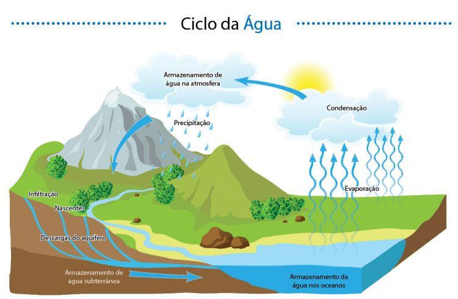
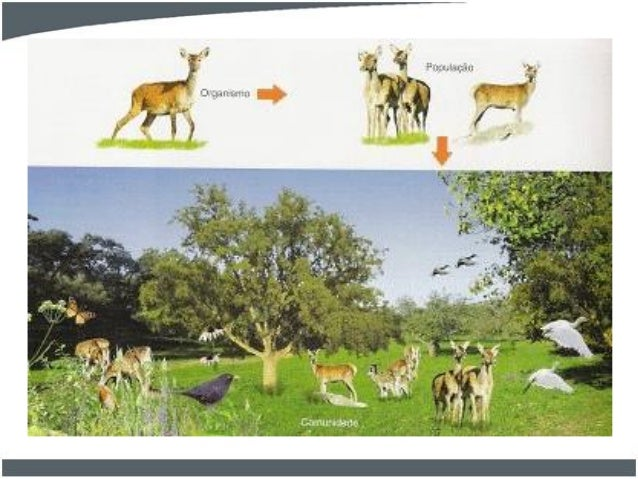
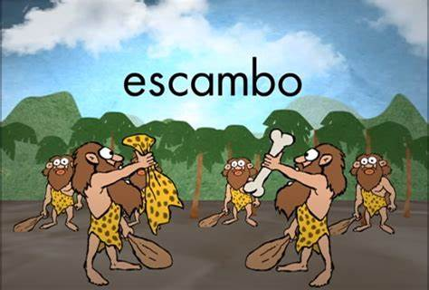

Cycles naturels et autorégulation (ex: cycle de l'eau 🌊) - Les systèmes
naturels
se réfèrent aux processus qui se produisent dans l'environnement sans intervention humaine
directe. Un exemple
est le cycle de l'eau, crucial pour l'équilibre écologique. Les altérations de ce cycle, comme
celles causées
par les changements climatiques, peuvent entraîner des catastrophes naturelles, impactant la vie
humaine et la
biodiversité.

Interconnexion entre écosystèmes 🌳 - Les écosystèmes sont des communautés
d'organismes
interagissant. Par exemple, la pollution d'une rivière peut affecter la faune aquatique et, par
conséquent,
impacter les plantes et les animaux sur les rives. La marée noire de 2010 dans le Golfe du
Mexique est un
exemple de la manière dont un événement peut affecter les écosystèmes et les économies locales,
montrant la
fragilité de l'interconnexion entre les systèmes naturels et les activités humaines.

Systèmes d'Échange 💱
Troc entre marchandises dans les sociétés primitives 🏺 - Avant l'invention de
l'argent, les gens échangeaient des biens directement. Ce système permettait la survie des
communautés, mais était limité et dépendait du besoin mutuel. De nos jours, des plateformes
d'échange comme OLX et Facebook Marketplace revitalisent cette pratique, permettant aux gens
d'échanger des biens de manière plus organisée et accessible.

Développement du commerce 💰 – Le commerce a évolué avec l'utilisation de la
monnaie,
facilitant les transactions. Le commerce en ligne a connu une croissance exponentielle,
notamment pendant la
pandémie de COVID-19, lorsque le commerce physique a été interrompu. Cela a radicalement changé
la manière
dont les gens achètent, soulignant l'importance de systèmes d'échange agiles et efficaces.
Systèmes d'Écriture ✍️
Premiers enregistrements sur pierre et argile pour les transactions 📜 -
L'écriture est apparue pour
enregistrer les transactions. Ce développement a permis la création de civilisations complexes.
Aujourd'hui, la numérisation de l'information, comme la blockchain, transforme la manière dont
nous enregistrons et vérifions les transactions, augmentant la sécurité et la transparence.
Création de lois et documentation 📚 – Avec l'écriture, il est devenu possible
de documenter les lois et les traités. Aujourd'hui, le manque de transparence dans les systèmes
juridiques peut conduire à des injustices. Par exemple, des scandales comme l'affaire de
l'Opération Lava Jato au Brésil révèlent comment
des systèmes corrompus peuvent miner la confiance de la population dans les institutions.
Systèmes de Gouvernement 🏛️
Création de gouvernements organisés (monarchies 👑, républiques 🇵🇹) - Les
systèmes de
gouvernement régulent la société. En période de crise, comme la crise financière de 2008, les
systèmes de
gouvernement doivent répondre rapidement aux besoins de la population, démontrant l'efficacité
ou
l'inefficacité de ces derniers dans le maintien de l'ordre social.
Structuration des sociétés et des lois ⚖️ – Les lois garantissent l'ordre.
Cependant,
les défaillances du système juridique, comme les cas d'abus des droits de l'homme dans divers
pays, montrent
comment la mise en œuvre et l'application des lois peuvent échouer, entraînant des conflits et
un mécontentement
social.
Systèmes Monétaires 💵
Introduction de la monnaie pour faciliter les échanges commerciaux 💳 – La
monnaie a facilité
les transactions, remplaçant le troc. Aujourd'hui, la volatilité des cryptomonnaies comme le
Bitcoin
illustre comment de nouveaux systèmes monétaires peuvent défier les économies traditionnelles et
créer
des incertitudes sur le marché financier.
Évolution des méthodes de paiement 💳 – Les méthodes de paiement ont évolué
pour
inclure les cartes et les paiements numériques. Pendant la pandémie, l'utilisation des paiements
sans contact
a augmenté, soulignant l'importance de l'adaptabilité des systèmes financiers aux besoins des
personnes.
Systèmes d'Information 💻
Révolution numérique avec les ordinateurs et les réseaux de données 🌐 – La
révolution numérique
a changé la manière dont nous traitons les informations. Par exemple, le scandale de Cambridge
Analytica
illustre comment la manipulation des données peut impacter l'opinion publique et influencer les
élections,
démontrant la responsabilité associée à la gestion des systèmes d'information.
Accès à l'information à grande échelle 📊 - Avec Internet, l'accès à
l'information
est devenu facile, mais aussi problématique, avec la diffusion de fausses nouvelles affectant la
perception
publique et la confiance dans les informations vitales.
Systèmes d'IA et d'Automatisation 🤖
Intelligence Artificielle et automatisation des processus ⚙️ – L'IA
révolutionne
la manière dont nous travaillons et vivons. L'automatisation des emplois, comme dans les usines
et les services,
soulève des questions sur l'avenir du travail et la nécessité de requalification professionnelle
pour
les travailleurs affectés.
Optimisation de la production et des services 🛠️ – Les avancées comme
l'automatisation des chatbots
améliorent le service client, mais peuvent également entraîner du chômage dans les secteurs
traditionnels. La discussion sur un avenir où les humains et les machines coexistent de manière
équilibrée
est de plus en plus pertinente.
Systèmes Cybernétiques 🌐
Intégration entre technologie et corps humain (prothèses 🤖) – Les systèmes
cybernétiques améliorent la santé et la qualité de vie. Cependant, des questions éthiques
surgissent avec la
biotechnologie, comme l'utilisation de l'édition génétique (CRISPR) et ses implications
sociales.
Avancées en Biotechnologie et connectivité 🔬 – Les dispositifs de surveillance
de
la santé révolutionnent la médecine, mais la confidentialité des données personnelles et la
sécurité
numérique sont des préoccupations croissantes.
Systèmes de Calcul Quantique 🧩
Développement de nouveaux systèmes de calcul (ex: Google et IBM) 🔗 – Le
calcul quantique promet de résoudre des problèmes complexes en un temps record. Cependant, les
implications éthiques et de sécurité sont des sujets de discussion intense, considérant comment
cela
pourrait affecter la cryptographie et la sécurité des données.
Nouvelles possibilités en intelligence et vitesse 🔍 – Les avancées en calcul
quantique peuvent révolutionner la manière dont nous traitons les informations, de la prévision
des
changements climatiques à la modélisation de nouveaux médicaments.